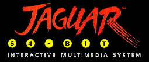
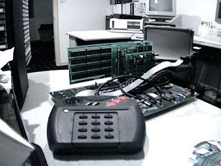
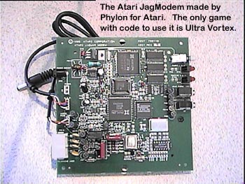
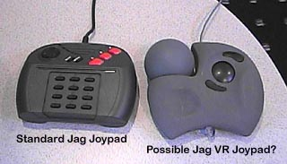
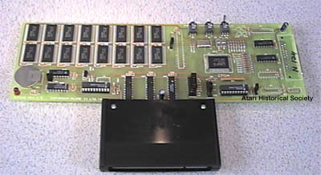

|
|
|
|
|
|
Atari Corp finally returned to the home video game console market with its advancement 64 bit multimedia entertainment system called the Atari Jaguar 64. This system featured high resolution graphics, superb stereo sound and DSP expansion capabilities which made it the perfect platform for a whole new generation of video games and accessories. However, Atari Corp's management again showed how cheap and noncommittal they were to supporting their products and the plug was pulled on both the Jaguar 64 and Atari Corp itself in 1996 when Atari allowed itself to be merged with JTS Corp, a little known hard disk manufacture who was hungry for a fresh injection of fast cash and an easy route to becoming a company with publicly traded stock. ATC ceased to exist on the stock exchange and JTS took its place. The stock then proceeded to nose dive from $3-4 per share to .65 cents per share (one time as low as .12 cents) and has held around that number since. JTS management then liquidated the remaining stock of Jaguar 64's and related products and is now in the midst of selling off rights and trademarks to other companies, in effect JTS is simple slicing Atari into tiny pieces and selling them to the highest bidder. Under the shadow of an SEC investigation for not maintaining Atari's business as specified in the reverse merger agreement, JTS quickly sold the Atari division.
On March 3, 1998 JTS sold its Atari division to Hasbro Interactive for $5 million and Hasbro intends to sell retrogame versions of Atari's most popular titles for the PC and Playstation markets. Currently Hasbro has made no indications of utilizing any of Atari proprietary hardware designs for any new console or handheld games. Centipede for the PC was recently released and Hasbro clearly display's ATARI and the Logo on the box ensuring that consumers know it is an Atari product.
Atari has many bold plans and announcements for the Jaguar platform when
it came out, however many of the promises quickly fell short, It
was these unfortunate turns of events which caused certain projects to
be canceled and products which were completed to never see the site of
day. Above you see the Jaguar 64 as we know it, below you will see
an image of what the Jaguar developers system looked like in 1993.
You will also see an image of a completely finished Atari product which
could have given the Jaguar 64 some real power, other unusual and possibly
breakthrough products never saw the light of day.

The FLARE II RAPIER Development
System.
Going from left to right, the cards installed
on the main board are:
Rapier ROM Emulator
Felix I/O Interface
Rapier to Atari CD-ROM Interface
The Main board contains a 16 MHz 68000
as well as a VGA output port, 2 Atari Jaguar controller ports, power input
from a standard PC power supply and additional circuitry for video and
interfacing.

The Atari Jaguar Modem
This is a finished modem that plugs directly into the Atari Jaguar 64 DSP
port on the back of the Jaguar. This unit used the Atari Jaguar
power supply, then had a cable that came out of it that plugged into the
Jaguar to feed it power. It has 2 telephone jacks, a power switch,
2 LED's (one for power and the other for data connection) and a headphone
jack and microphone jack for use with a headset to talk to the player on
the other end while you played against them. The only game
with Jag Modem code written into it for use with the modem is Ultra Vortex
(Although rumors have been spread that the newly released Iron Soldier
2 may also have code, this is unconfirmed). Game play is good,
although voice quality suffers a bit due to the sharing of bandwidth between
the data and voice across the phone line. Maximum connect speed
is 19.2k

Jaguar
64 VR Joy pad?
This was one of the most usual and unexpected finds to date. This joystick turned up in a box that came out of Atari of Jaguar 64 joy pads one day and has been an interesting addition to the Atari Prototypes collection ever since. This joy pad has a very similar look to a standard Atari Jag joy pad, but the addition of the 360 degree "racquet ball" controller in the top left of the controller and the touch sensitive "tracking" area on the right side separate this controller from anything I've yet to see from Atari.
The APV Site staff have been contacted by an engineer who did the actual
work on the above shown VR Joypad. What is shown above
was a development prototype sent to Atari from a company called SpaceTec
and the above controller was called the SpacePlayer 3D-I Jaguar controller.
SpaceTec was to be the first company to sell a 3rd party joystick commercially
for the Jaguar, the joystick was never sold unfortunately :(

The Flare II Alpine Developers
Card